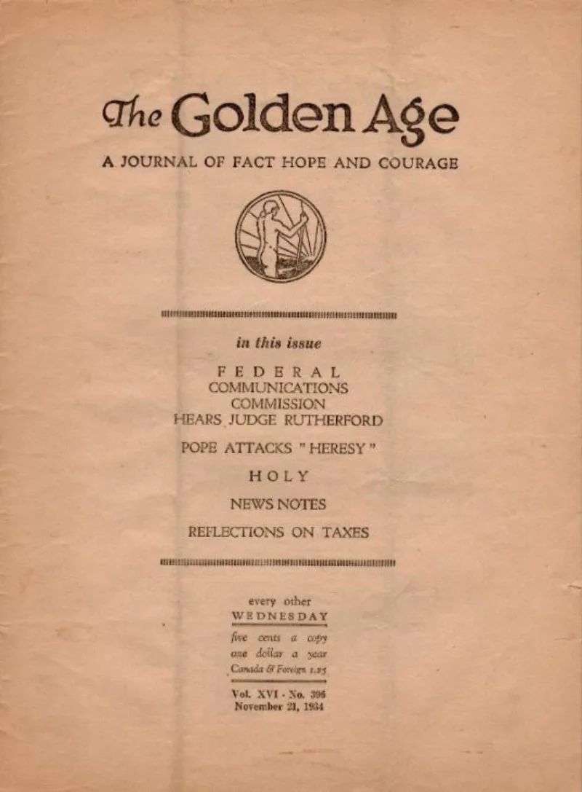

Ex-members called 'mentally diseased' in print, 2011
AdmittedThe Watchtower's own publications admit these facts. You can make this point from their library alone.
The word used for people who leave
The Watchtower of July 15, 2011 (study edition, p. 16) said apostates are "mentally diseased." It said they seek to infect others with their disloyal teachings.
Readers were told not to invite them home. Not to read their letters.
Not to visit their websites.
Who counts as an apostate
Not only campaigners. The label reaches any member who keeps disagreeing with the Governing Body.
The Australian Royal Commission heard sworn evidence on this. Leaving because you no longer believe brings the same shunning as being thrown out.
The 2011 article drew press coverage, and a hate-speech complaint in the UK.
What it achieves
It seals members off. They are warned in advance against every source that could show them the material on this page.
The source itself is framed as a disease. That covers court records and sworn evidence too.
Their answer, at full strength
The phrase is a quotation. Their Bible renders 1 Timothy 6:3-4 that way.
A man who teaches other doctrine is puffed up with pride, and mentally diseased over questionings. So the article uses a Bible phrase, not a doctor's word.
Every group warns against people trying to destroy its members' faith. Paul named two by name, Hymenaeus and Alexander.
He told believers to keep away from those who cause division (Romans 16:17; Titus 3:10).
Where that runs out
Their Bible does render the Greek noseo as "mentally diseased." So the defense is real, and you should show it. But the article turns a figure of speech about pride into a rule.
The rule seals off all criticism. Romans 16:17 does not cover court records.
Jesus went the other way with a doubter: "Put your finger here" (John 20:27). Paul wrote "prove all things" (1 Thessalonians 5:21).
The Beroeans were called noble for checking an apostle against Scripture (Acts 17:11).
What to say
"If something is true, checking it can only help. What is the risk in reading it?"


How they answer this — at its strongest
The phrase is a Bible quotation. Their own 1 Timothy 6:4 reads 'mentally diseased.'
The Witness defense is that the phrase is a quotation. It comes from 1 Timothy 6:3-4. In their Bible, a man who teaches other doctrine is 'puffed up with pride... mentally diseased over questionings.' So the article uses a Bible phrase, not a doctor's word.
Every group warns against people working to destroy its members' faith. Paul named two by name, Hymenaeus and Alexander. He told believers to keep away from those who cause division (Romans 16:17; Titus 3:10). Staying clear of hostile material is self-defense, not thought control.
The verdict
They admit it themselves. This is what keeps every other case here unexamined.
The quote is word for word from their study edition. It was defended, not withdrawn.
The 1 Timothy 6:4 defense is real. The NWT does render noseo as 'mentally diseased.' So show it. But the article turns a figure of speech about pride into a rule of quarantine. That rule covers all critical material, including sworn evidence and court records. Romans 16:17 does not stretch that far.
Severity is high. This is the mechanism that keeps every other case on this list unread.
Sources
- Will You Heed Jehovah's Clear Warnings? — The Watchtower Jul 15, 2011 (wol.jw.org)
- The Independent (2011) — 'mentally diseased' coverage via Watchman Fellowship summary
- jwfacts — Watchtower quotes regarding apostates